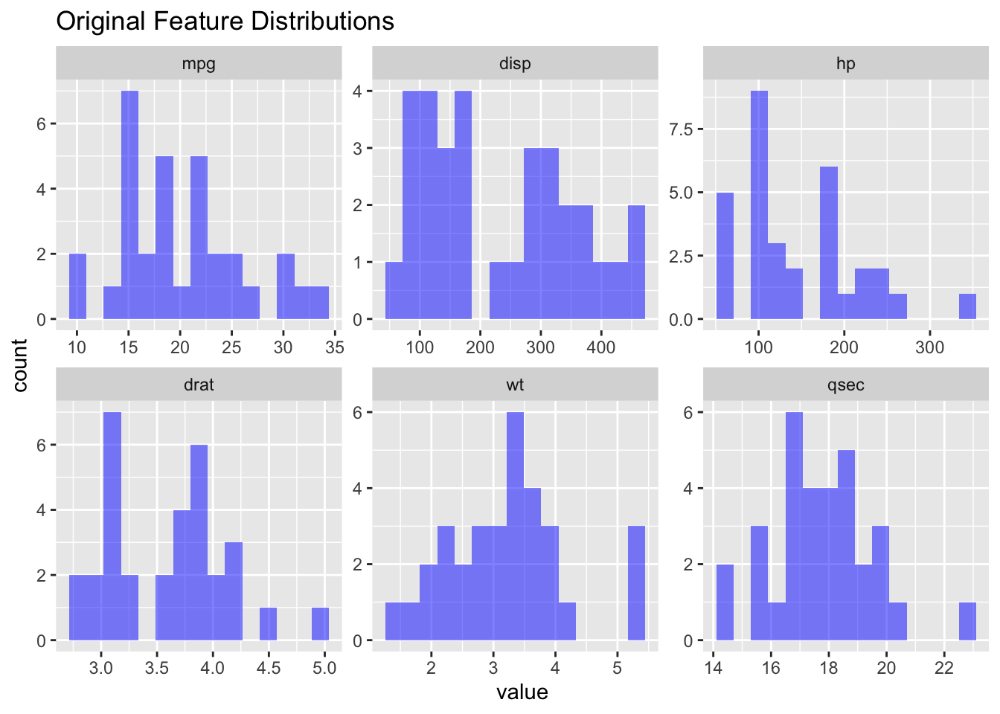
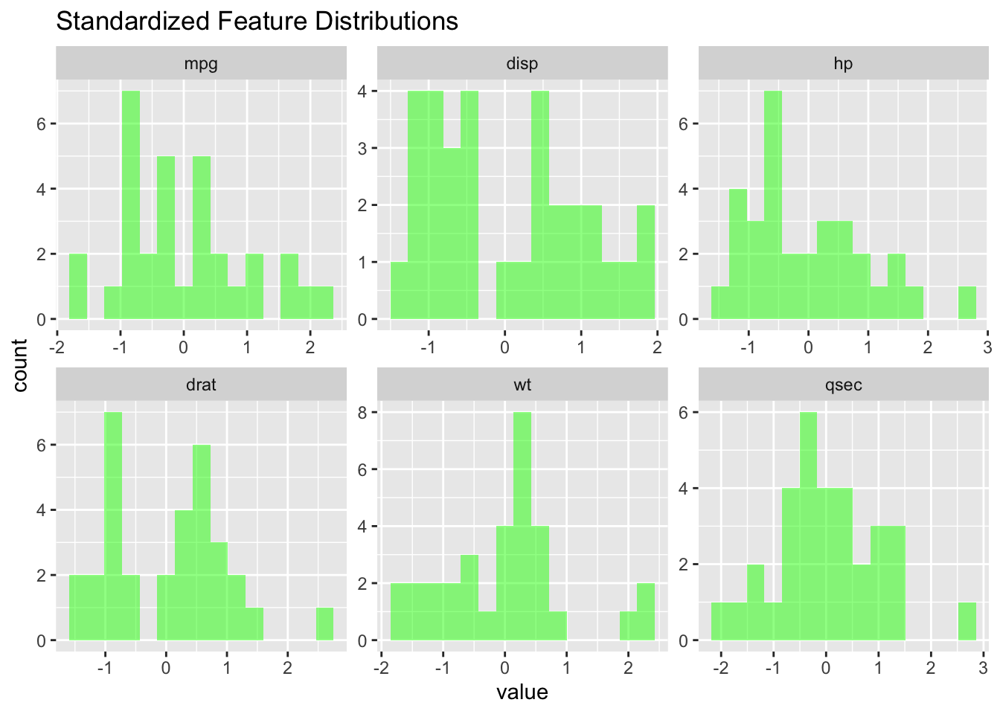
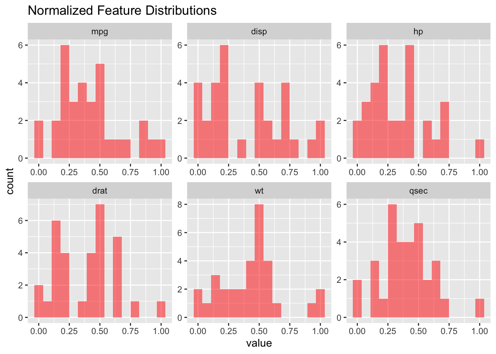
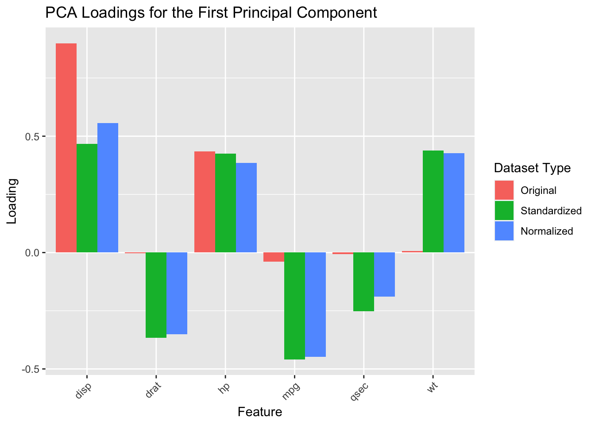

── Attaching core tidyverse packages ──────────────────────── tidyverse 2.0.0 ──
✔ dplyr 1.1.2 ✔ readr 2.1.4
✔ forcats 1.0.0 ✔ stringr 1.5.0
✔ lubridate 1.9.2 ✔ tibble 3.2.1
✔ purrr 1.0.1 ✔ tidyr 1.3.0
── Conflicts ────────────────────────────────────────── tidyverse_conflicts() ──
✖ dplyr::filter() masks stats::filter()
✖ dplyr::lag() masks stats::lag()
ℹ Use the conflicted package (<http://conflicted.r-lib.org/>) to force all conflicts to become errorsMeasuring distances and PCA
This exercise is going to be run in R
# Load the mtcars dataset
data("mtcars") #already available from the downloaded libraries mpg disp hp drat wt qsec
Mazda RX4 21.0 160 110 3.90 2.620 16.46
Mazda RX4 Wag 21.0 160 110 3.90 2.875 17.02
Datsun 710 22.8 108 93 3.85 2.320 18.61
Hornet 4 Drive 21.4 258 110 3.08 3.215 19.44
Hornet Sportabout 18.7 360 175 3.15 3.440 17.02
Valiant 18.1 225 105 2.76 3.460 20.22# Step 1: Standardize the dataset
mtcars_standardized <- as.data.frame(scale(mtcars_small))
head(mtcars_standardized) mpg disp hp drat wt
Mazda RX4 0.1508848 -0.57061982 -0.5350928 0.5675137 -0.610399567
Mazda RX4 Wag 0.1508848 -0.57061982 -0.5350928 0.5675137 -0.349785269
Datsun 710 0.4495434 -0.99018209 -0.7830405 0.4739996 -0.917004624
Hornet 4 Drive 0.2172534 0.22009369 -0.5350928 -0.9661175 -0.002299538
Hornet Sportabout -0.2307345 1.04308123 0.4129422 -0.8351978 0.227654255
Valiant -0.3302874 -0.04616698 -0.6080186 -1.5646078 0.248094592
qsec
Mazda RX4 -0.7771651
Mazda RX4 Wag -0.4637808
Datsun 710 0.4260068
Hornet 4 Drive 0.8904872
Hornet Sportabout -0.4637808
Valiant 1.3269868# Step 2: Normalize the dataset
normalize <- function(x) {
return((x - min(x)) / (max(x) - min(x)))
}
mtcars_normalized <- as.data.frame(lapply(mtcars_small, normalize))
head(mtcars_normalized) mpg disp hp drat wt qsec
1 0.4510638 0.2217511 0.2049470 0.5253456 0.2830478 0.2333333
2 0.4510638 0.2217511 0.2049470 0.5253456 0.3482485 0.3000000
3 0.5276596 0.0920429 0.1448763 0.5023041 0.2063411 0.4892857
4 0.4680851 0.4662010 0.2049470 0.1474654 0.4351828 0.5880952
5 0.3531915 0.7206286 0.4346290 0.1797235 0.4927129 0.3000000
6 0.3276596 0.3838863 0.1872792 0.0000000 0.4978266 0.6809524# Plot original distributions
ggplot(mtcars_long, aes(value)) +
geom_histogram(bins = 15, fill = "blue", alpha = 0.5) +
facet_wrap(~variable, scales = "free") +
ggtitle("Original Feature Distributions")
# Plot standardized distributions
ggplot(mtcars_standardized_long, aes(value)) +
geom_histogram(bins = 15, fill = "green", alpha = 0.5) +
facet_wrap(~variable, scales = "free") +
ggtitle("Standardized Feature Distributions")
# Plot normalized distributions
ggplot(mtcars_normalized_long, aes(value)) +
geom_histogram(bins = 15, fill = "red", alpha = 0.5) +
facet_wrap(~variable, scales = "free") +
ggtitle("Normalized Feature Distributions")
# Step 5: Perform PCA
# PCA on original data
pca_original <- prcomp(mtcars_small, scale. = FALSE)
summary(pca_original)Importance of components:
PC1 PC2 PC3 PC4 PC5 PC6
Standard deviation 136.5197 38.12999 3.04175 1.20827 0.34029 0.2946
Proportion of Variance 0.9271 0.07232 0.00046 0.00007 0.00001 0.0000
Cumulative Proportion 0.9271 0.99946 0.99992 0.99999 1.00000 1.0000# PCA on standardized data
pca_standardized <- prcomp(mtcars_standardized, scale. = FALSE)
summary(pca_standardized)Importance of components:
PC1 PC2 PC3 PC4 PC5 PC6
Standard deviation 2.0463 1.0715 0.57737 0.39289 0.3533 0.22799
Proportion of Variance 0.6979 0.1913 0.05556 0.02573 0.0208 0.00866
Cumulative Proportion 0.6979 0.8892 0.94481 0.97054 0.9913 1.00000# PCA on normalized data
pca_normalized <- prcomp(mtcars_normalized, scale. = FALSE)
summary(pca_normalized)Importance of components:
PC1 PC2 PC3 PC4 PC5 PC6
Standard deviation 0.5358 0.2433 0.14060 0.10888 0.08499 0.05950
Proportion of Variance 0.7386 0.1523 0.05087 0.03051 0.01859 0.00911
Cumulative Proportion 0.7386 0.8909 0.94179 0.97230 0.99089 1.00000# Extract PCA loadings
loadings_original <- as.data.frame(pca_original$rotation)
loadings_standardized <- as.data.frame(pca_standardized$rotation)
loadings_normalized <- as.data.frame(pca_normalized$rotation)
# Combine PCA loadings for comparison
loadings_comparison <- cbind(
Original = loadings_original$PC1,
Standardized = loadings_standardized$PC1,
Normalized = loadings_normalized$PC1
)
rownames(loadings_comparison) <- rownames(loadings_original)
print(loadings_comparison) Original Standardized Normalized
mpg -0.038121041 -0.4586835 -0.4481581
disp 0.899662536 0.4660354 0.5567890
hp 0.434814427 0.4258534 0.3851297
drat -0.002660333 -0.3670963 -0.3506844
wt 0.006240020 0.4386179 0.4265249
qsec -0.006671364 -0.2528320 -0.1895057# Step 6: Visualize PCA loadings
# Combine data for plotting
loadings_comparison_df <- data.frame(
Feature = rownames(loadings_comparison),
Original = loadings_original$PC1,
Standardized = loadings_standardized$PC1,
Normalized = loadings_normalized$PC1
)
loadings_comparison_long <- melt(loadings_comparison_df, id.vars = "Feature")
# Plot PCA loadings
ggplot(loadings_comparison_long, aes(x = Feature, y = value, fill = variable)) +
geom_bar(stat = "identity", position = "dodge") +
ggtitle("PCA Loadings for the First Principal Component") +
labs(x = "Feature", y = "Loading", fill = "Dataset Type") +
theme(axis.text.x = element_text(angle = 45, hjust = 1))